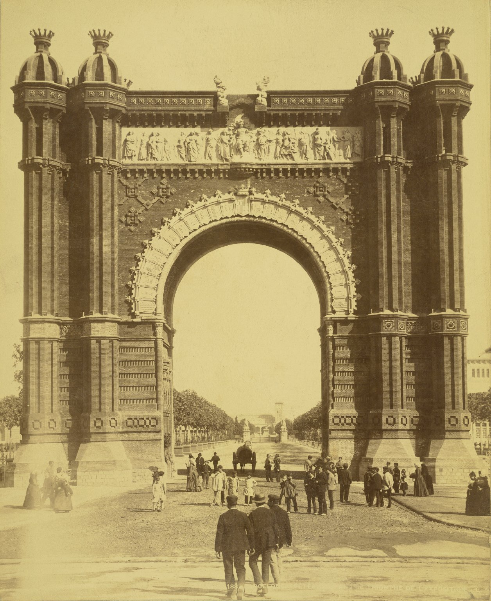

1888
Exposició Universal
Barcelona s'obre al món. Comenúa la febre constructora.
1898

Els 4 Gats
Obertura del centre cultural bohemi on Picasso, Casas i Rusiñol es reunien.
1900-1914
Esplendor
Es construeixen la Pedrera, Casa Batlló, Parc Güell, Palau de la Música...
1907
Modernisme Industrial
Muncunill construeix la Masia Freixa i el Vapor Aymerich a Terrassa.
1915
Noucentisme
La raó i l'ordre substitueixen la fantasia modernista.